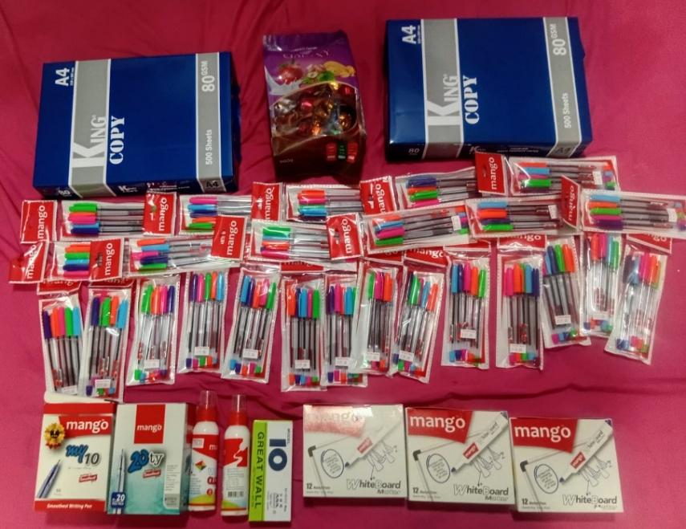
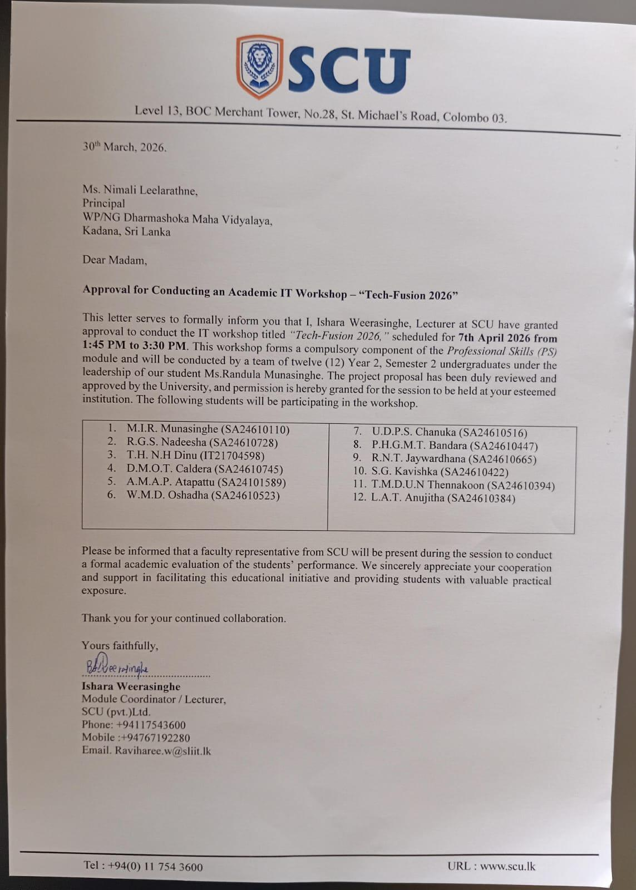

Tech-Fusion 2026: Community Service IT Workshop Logo
As a key part of our Professional Skills module, our group (Group 13) collaborated to execute an educational community service project named "Tech-Fusion 2026". Our goal was to design and conduct a hands-on IT workshop for schoolchildren in an underprivileged area who lacked hardware access.
We selected WP/NG Dharmashoka Maha Vidyalaya as our project site. After conducting a site analysis, we realized the school's IT lab had only one working computer, which was 15 years old. This motivated our team of 12 to build a temporary "Mobile Tech Lab" using our personal laptops, providing 25 students with their very first hands-on experience in modern coding.
I learned that bridging the digital divide in underprivileged schools requires active participation, planning, and resource deployment. Here is an overview of what we planned and executed:
We designed and executed an intensive, one-day educational IT workshop aimed at giving students hands-on exposure to practical computer science concepts.
We introduced students to Web Development (HTML/CSS), Cybersecurity fundamentals, and Algorithmic Logic through custom coding exercises.
Since the venue lacked working computer systems, we deployed 12 personal laptop workstations, creating a temporary, high-tech classroom hub.
We selected WP/NG Dharmashoka Maha Vidyalaya based on an assessment of local schools. Our analysis revealed a critical digital divide:
I realized that careful budgeting and funding allocation are critical to the success of any project. We managed our budget through structured planning:
| Item Category | Description | Estimated Cost (LKR) |
|---|---|---|
| Printing & Stationery | 25 Master Tutes, Feedback Forms, Cipher Wheels | 5,000 |
| Transport | Lecturer Transport (Round-Trip via Uber/PickMe) | 3,500 |
| Mobile Data | To download Files if accidentally deleted | 1,000 |
| Token of Gratitude | School Supplies Donation for the office | 7,000 |
| Student Treats | Chocolates or snacks for the participants | 1,500 |
| Contingency | Emergency Buffer (10%) | 1,800 |
| TOTAL BUDGET | 19,800 LKR | |
| Category | Details | Amount (LKR) |
|---|---|---|
| Education Materials | 25 Student Hand Book color pages | 3,250 |
| Donation Items |
• 80 GSM A4 papers (4 packs) • 25 Color Pen Sets for participants • 2 Glue Bottles, 1 Stapler Pins Pack • 3 Boxes of White Board Markers, 2 boxes of Pens |
11,955 |
| Gift for Quiz Winner | One bag of Chocolates | 1,850 |
| Decoration Materials | Two Bristol Boards, Glitter Sheets, Color papers, Logo Printouts | 1,500 |
| TOTAL SPENT | 18,555 LKR | |

Figure 1: School supplies and donations formally handed over to the IT Teacher, Ms. Chathuri.
Given the school's lack of computing hardware, we executed a Self-Sustained Infrastructure Model to ensure smooth operations:
I realized that strong teamwork, division of labor, and clear role definitions are essential for running a large-scale project without conflicts:
| Name | Reg. No | Role or Duties in Charge of |
|---|---|---|
| M.I.R. Munasinghe | SA24610110 | Team Leader, Budget & Resource Allocation, Document Handling, Main Host of the Event. |
| R.G.S. Nadeesha | SA24610728 | Teaching Assisting, Decoration, Arranging Stationery Materials. |
| T.H. Nandula Hansa Dinu | IT21704598 | Teaching Assisting, Collecting Resources from the Marketing Team, Setting up Workstations. |
| D.M.O.T. Caldera | SA24610745 | Teaching Assisting, Decoration, Arranging Stationery Materials. |
| A.M.A.P. Atapattu | SA24101589 | Teaching Assisting, Decoration, Arranging Stationery Materials. |
| W.M.D. Oshadha | SA24610523 | Teaching Assisting, Decoration, Setting up Workstations. |
| U.D.P.S. Chanuka | SA24610516 | Teaching Assisting, Decoration, Setting up Workstations. |
| P.H.G.M.T. Bandara | SA24610447 | Teaching Assisting, Decoration, Setting up Workstations. |
| R.N.T. Jaywardhana | SA24610665 | Teaching Assisting, Buying Donation Items, Coordinating the lessons. |
| S.G. Kavishka | SA24610422 | Teaching Assisting, Decoration, Setting up Workstations. |
| T.M.D.U.N Thennakoon | SA24610394 | Teaching Assisting, Taking Pictures and Videos of the event, Setting up Workstations. |
| L.A.T. Anujitha | SA24610384 | Teaching Assisting, Decoration, Setting up Workstations. |
Our entire team would like to extend our sincere gratitude to those who made this project possible:
I realized that documenting our work visually is a crucial part of maintaining professional records. Here are some capture highlights from our IT workshop:
I learned that professional projects require backing up all claims with official records, invoices, and feedback summaries:

Official approval letter signed by Ms. Ishara Weerasinghe, Module Coordinator.
We collected formal feedback forms from participants to evaluate the clarity and impact of our IT workshop, receiving highly positive ratings (mostly 5/5):
Participating in this project as a teaching assistant and managing the purchase of our donation items was a deeply rewarding experience. Being on the ground and helping schoolchildren write their first lines of code allowed me to see the direct impact of our work. Guiding students one-on-one at their laptops and seeing their eyes light up when their HTML code rendered in the browser made all our preparation and coordination efforts incredibly worthwhile.
Managing the budget to purchase stationery, markers, and supplies taught me practical organization and resource allocation skills. I am incredibly proud of how our group of 12 worked together; our collaboration was seamless, with everyone supporting each other to make the workshop a success. Seeing the children's eagerness to learn IT has motivated me to seek more opportunities where I can use my skills to help others and give back to the community.